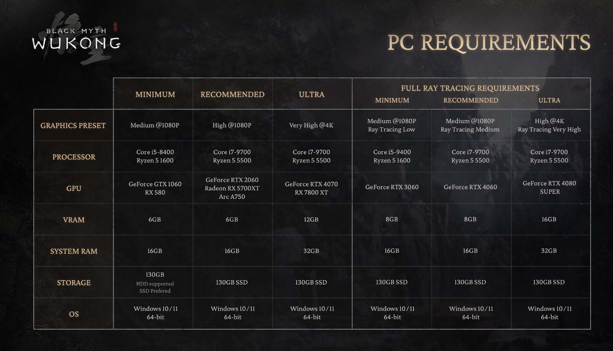
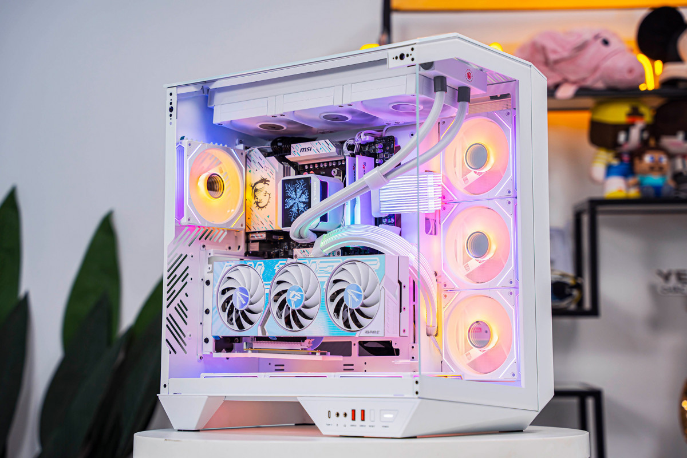

Lựa Chọn Cấu Hình PC Chơi Black Myth: Wukong
Là một trong những tựa game nhập vai hành động được mong đợi nhất năm nay, Black Myth: Wukong yêu cầu một cấu hình máy tính như thế nào để có trải nghiệm mượt mà? Dưới đây là phân tích chi tiết.
BLACK MYTH: WUKONG LÀ GÌ?
Black Myth: Wukong là tự game nhập vai hành động lấy cảm hứng từ tác phẩm Tây Du Ký của Ngô Thừa Ân, dự kiến sẽ được phát hành trên PC, PlayStation 5, Xbox Series X và Xbox Series S vào ngày 20 tháng 8 tới. Tại đây bạn sẽ vào vai Wukong (hay ở Việt Nam còn có cái tên thân thuộc là Tôn Ngộ Không) để khám phá sự thật ẩn giấu phía sau một huyền thoại hào hùng của quá khứ, đấu tranh chống lại hàng loạt quái vật sức mạnh rất lớn cùng bộ kỹ năng riêng biệt.
Để có thể khắc họa được chân thực nhất cuộc hành trình vô cùng "gian khổ" này, lối chơi của Black Myth Wukong sẽ đi theo gameplay có phần tương đồng với các thể loại game soul-like như Dark Souls, Sekiro hay Elden Ring..., đồng nghĩa tất cả kẻ địch trong game sẽ độ khó cực cao cùng sát thương lớn. Nếu bạn không cẩn thận khi đối đầu trực diện thì mời bạn... về checkpoint hay điểm lưu game thử lại. Với đồ họa tuyệt đẹp, lối chơi hấp dẫn và cốt truyện độc đáo, trò chơi hứa hẹn sẽ mang đến cho người chơi những trải nghiệm đỉnh cao nhất.
Cấu Hình Do Nhà Phát Hành Yêu Cầu
-

- CPU: Intel Core i5-8400 hoặc AMD Ryzen 5 1600
- RAM: 16GB
- GPU: NVIDIA GTX 1060 6GB hoặc AMD RX 580
- Lưu trữ: 100GB SSD
- Hệ điều hành: Windows 10 64-bit trở lên
Cấu hình tối thiểu:
- CPU: Intel Core i7-9700 hoặc AMD Ryzen 5 5500
- RAM: 16GB
- GPU: NVIDIA RTX 2060 6GB hoặc AMD RX 5700 XT hoặc Arc A750
- Lưu trữ: 100GB SSD
- Hệ điều hành: Windows 10 64-bit trở lên
Cấu hình khuyến nghị:
- CPU: Intel Core i7-9700 hoặc AMD Ryzen 5 5500
- RAM: 32GB
- GPU: NVIDIA RTX 4070 6GB hoặc AMD RX 7800 XT hoặc Arc A750
- Lưu trữ: 100GB SSD
- Hệ điều hành: Windows 10 64-bit trở lên
Cấu hình tối ưu:
TOP 3 PC GAMING CHƠI BLACK MYTH: WUKONG TỐI ƯU NHẤT
Dưới đây là một số cấu hình máy tính phù hợp chơi Black Myth: Wukong để mọi người tham khảo.
-

PC ULTRA GAMING
- CPU: Intel i5-14600KF
- RAM: 16GB
- GPU: RTX 5060 8GB
==> Tham khảo cấu hình chi tiết tại:
-
 PC GAMING PERFORMANCE
PC GAMING PERFORMANCE
- CPU: Intel i5-13400F
- RAM: 16GB
- GPU: RTX 4060 8GB OC
==> Tham khảo cấu hình chi tiết tại:
-
 PC GAMING SUPER LUXURY
PC GAMING SUPER LUXURY
- CPU: Intel i7-14700KF
- RAM: 32GB
- GPU: RTX 5070 Ti 16GB
==> Tham khảo cấu hình chi tiết tại: